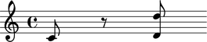
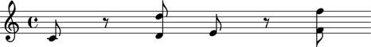

The Abjad container model
An Abjad Container is an ordered collection (i.e. a list data type) of Abjad _Component instances.
Various music structures, such as Staves, Measures or Tuplets, can be adequately modeled as Containers.
More flexible musical structures that cannot be strictly contained, such as Beams, free floating MetricGrids, Trills and dozens of others, are best modeled with other data structures. Abjad uses Spanners to model these other structures.
An Abjad Container can only hold Abjad _Components, and nothing else. An Abjad _Leaf is a _Component, so a Container can hold Leaves.
Here is a Voice container holding a Note, a Rest and a Chord:
abjad> notes = [Note(0, (1,8)), Rest((1,8)), Chord([2, 14], (1,8))] abjad> voice = Voice(notes) abjad> show(voice)
An Abjad Container is also a _Component, so Containers can hold other Containers.
Example: a Staff Container holds two Voice Containers which in turn hold three Leaves each:
abjad> notes = [Note(0, (1,8)), Rest((1,8)), Chord([2, 14], (1,8))] abjad> voice1= Voice(notes) abjad> notes = [Note(4, (1,8)), Rest((1,8)), Chord([5, 17], (1,8))] abjad> voice2= Voice(notes) abjad> staff = Staff([voice1, voice2]) abjad> show(staff)